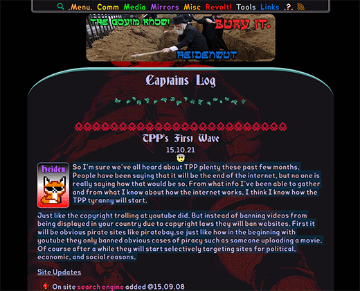

Political deep web tor

http://6sgjmi53igmg7fm7.onion/index.php?title=Main_Page
– Bugged Planet
http://faerieuaahqvzgby.onion/
– Fairie Underground
http://2r2tz6wzqh7gaji7.onion/
– Kavkaz Center
http://tnysbtbxsf356hiy.onion/
– The New Yorker Strongbox
http://duskgytldkxiuqc6.onion/
– Example rendezvous points page
http://rrcc5uuudhh4oz3c.onion/
– The Intel Exchange Forum :: Information and discussion on various topics, ranging from Illegal Activities and Alternative
Energy, to Conspiracy Theories and Hacking. Same people from SnapBBS on a fully secure, moderated and categorized forum.
http://opnju4nyz7wbypme.onion/weblog/index.html
– A7B blog :: a blog dedicated to the restoration of a limited constitutional republic in the USA
http://assmkedzgorodn7o.onion/
– Anonymous, safe, secure, crowdfunded assassinations.
http://duskgytldkxiuqc6.onion/comsense.html
– Commo Sense by Thomas Paine
http://nwycvryrozllb42g.onion/
– Destination Unknown
http://zbnnr7qzaxlk5tms.onion/
– Wiki Leaks